Below is an example showing how to annotate an English sentence.
First you should register an account, you should always annotate after logging in.
On home page, click on login.

This is the login page, type in your Email and password.

After logging in, click annotate on Nav bar:

Choose a txt file, flex format xml or tool box format xml, choose a language, then click on Annotate button

At the following annotation page, you can select "tasted" in the sentence by double clicking or click and drag. Then there is a button appears after Lexicalized Concept on the right: click the "tasted" button.

In the submenu, hover over find lemma, and click on tasted-01 in the subsubmenu:

Then the first line of annotation (t / taste-01) appears under UMR Penman Annotation, alignments section is updated, and tasted is colored, s1t is colored because it's current head:

Add attribute: click on Attribute box on the right, choose :Aspect, then an Attribute values box will appear right below the Attribute box, and then choose Performance

Click on Add attribute button, UMR Penman Annotation and Alignments on the left will be updated accordingly
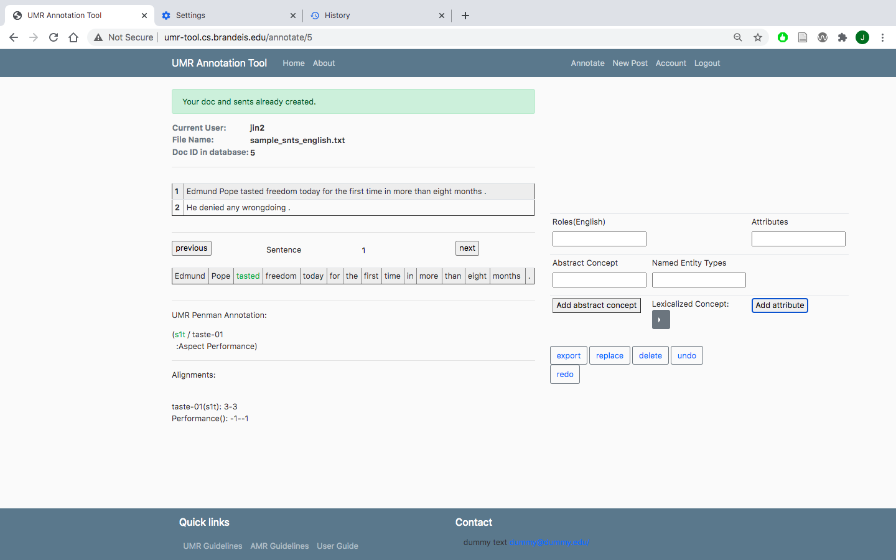Add named entity: Choose :ARG0 in Roles(English) box, choose person in Named Entity Types box
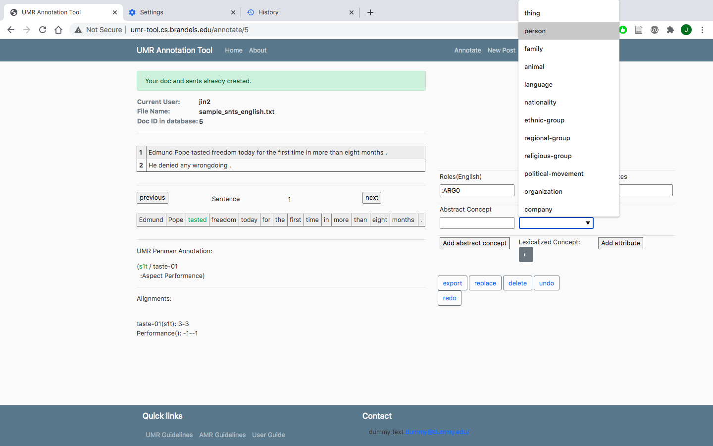Select Edmund Pope on the left, click on Edmund Pop in lexicalized Concept on the right:
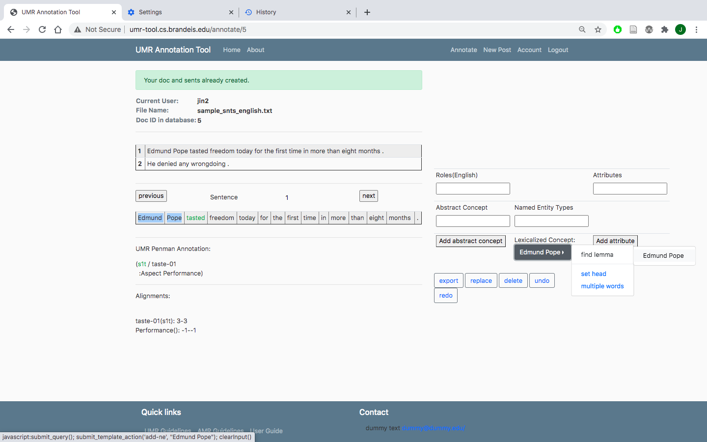new amr is generated on the left
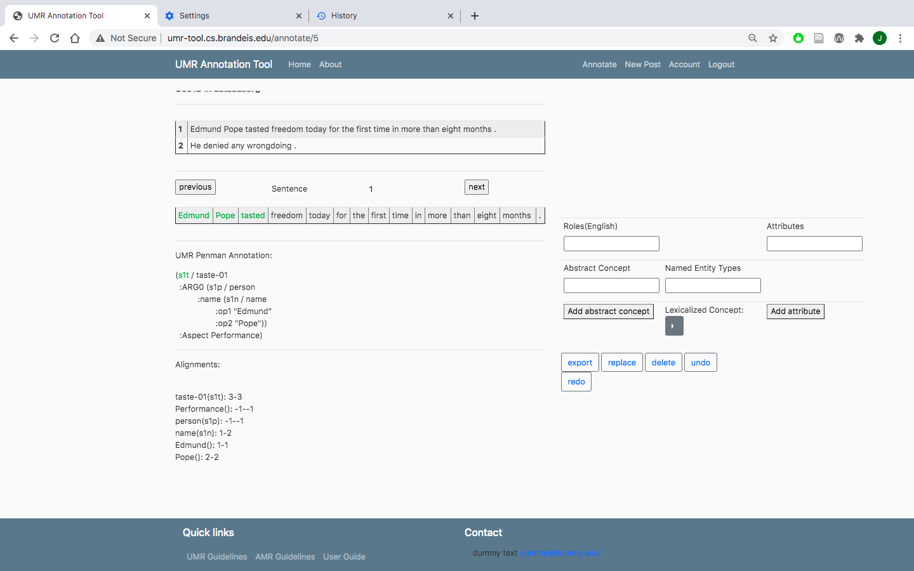Add a concept, choose :ARG1 on the right
Choose the correct sense of freedom on the right

Annotation is generated, but we want sense free-04 instead of freedom, we can change it manually
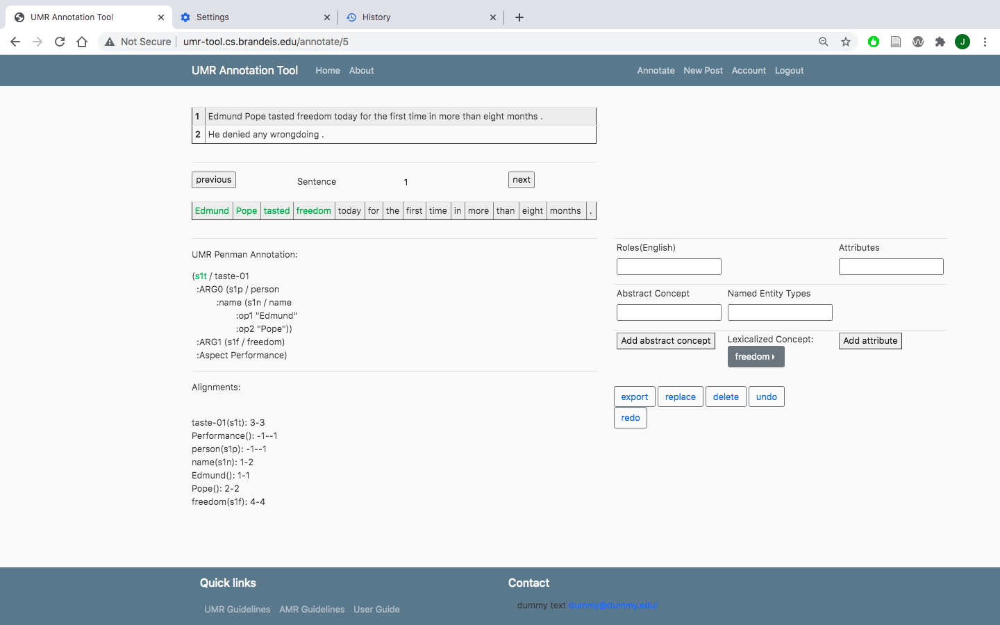Rlick on the replace button on the right.

Replace in place by editing in the blue box.
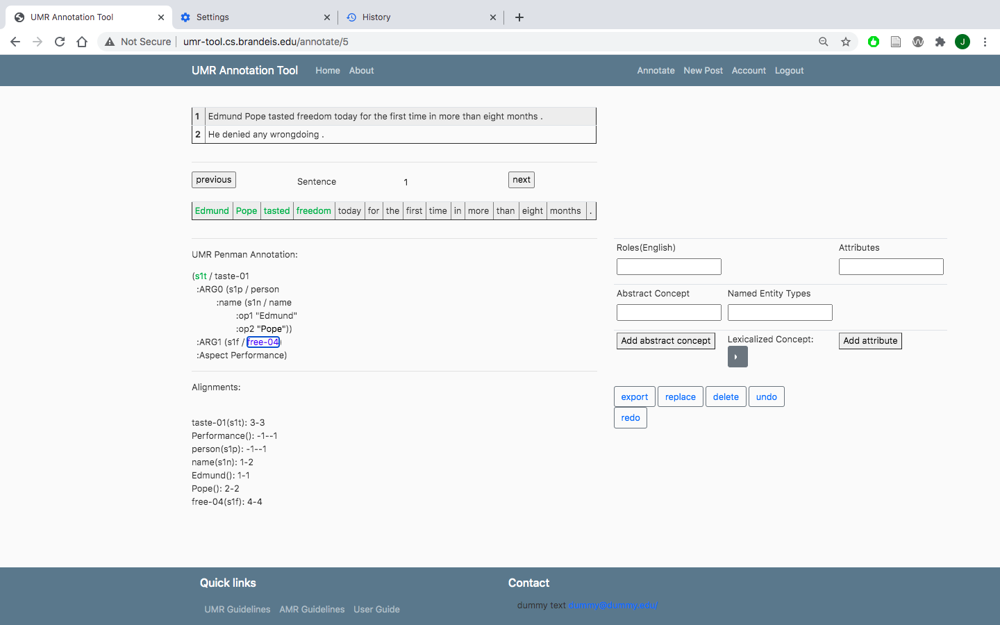Concept is replaced

To add a concept that alreay existed in the tree, choose the variable in the tree

the variable will be added in place.

Add abstract concept as following
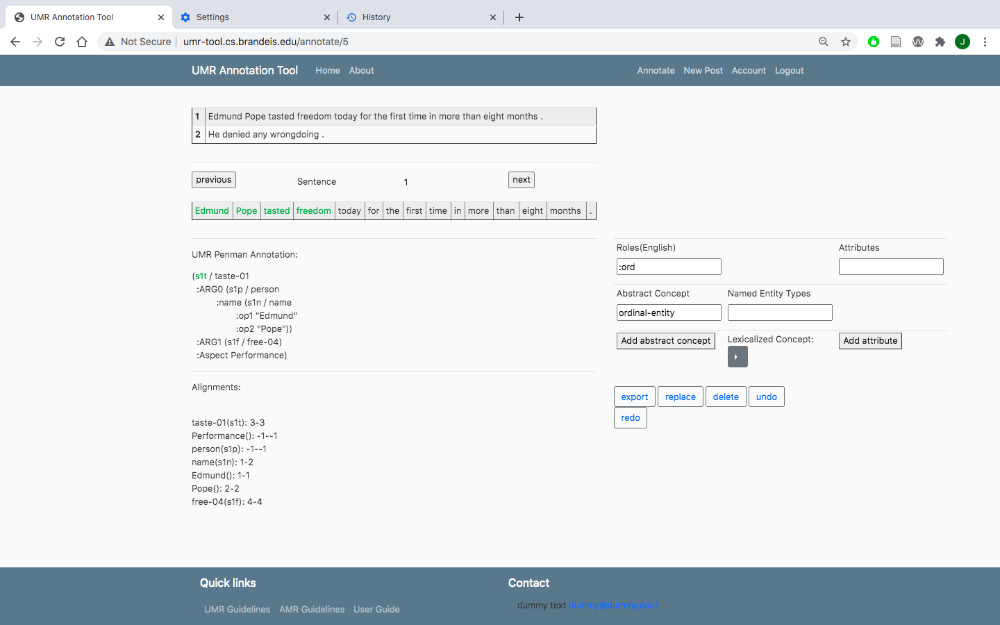 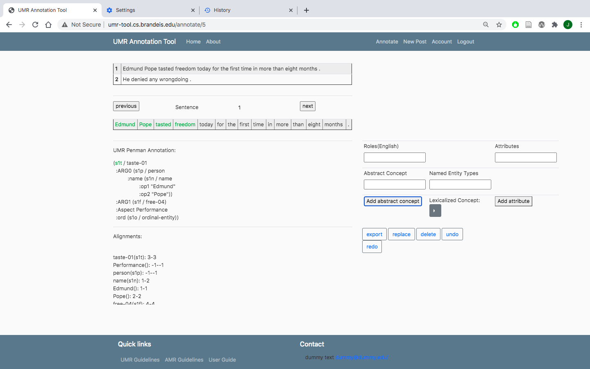Change the head as following:
 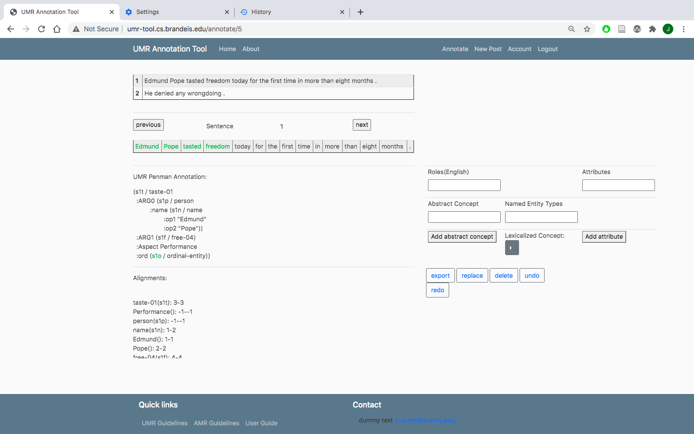
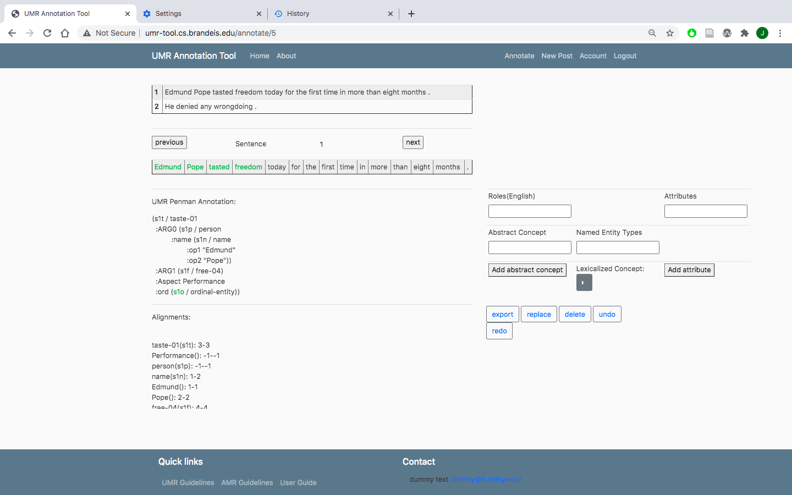
Add number as following:
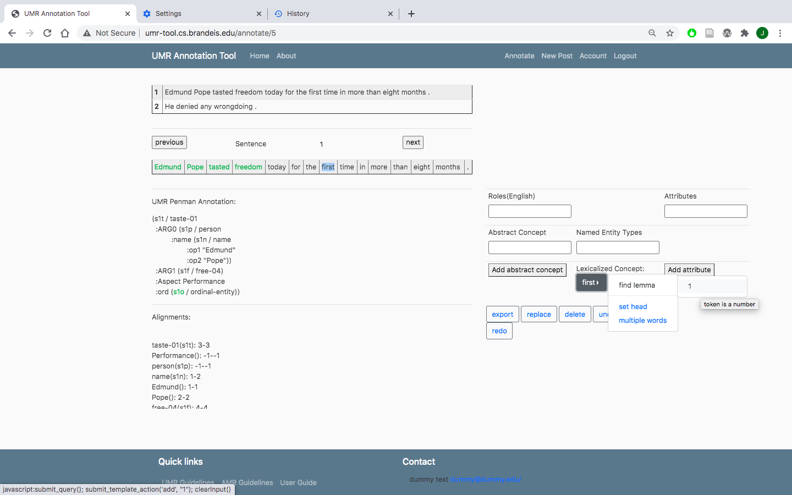Add multiple words as following


Move to the next sentence by clicking next button, finish the annotation, click on save2db button, then move on to document level annotation by clicking on the doc-level-annot button

To annotate the first sentence, make sure the current sentence box is showing 1, if not, change it to 1, and click save&go, choose the relation, and type in the arguments in Enter Args box. Click on save2db button after you finish
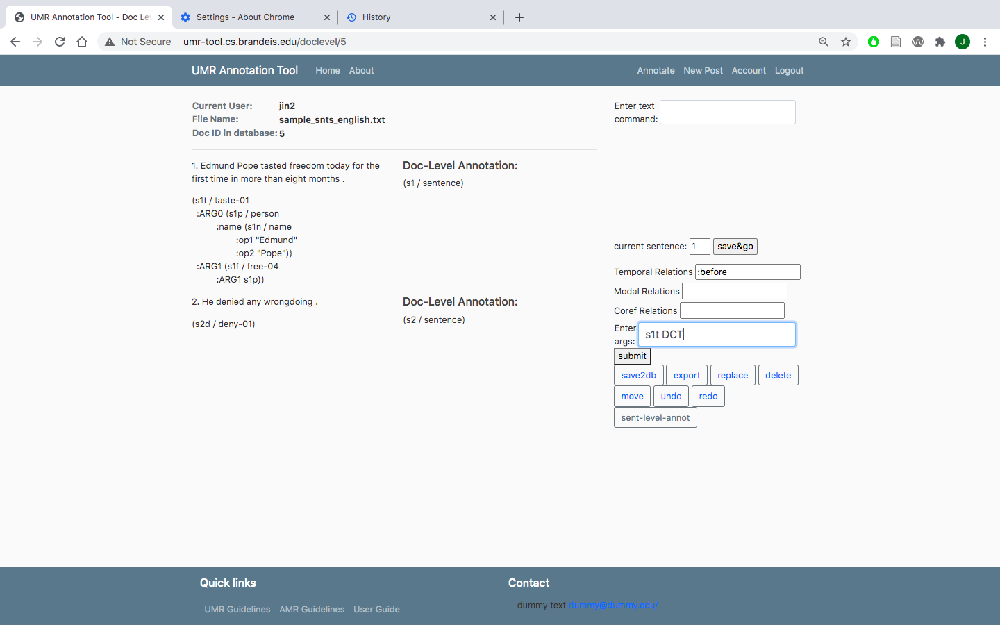This is another example:
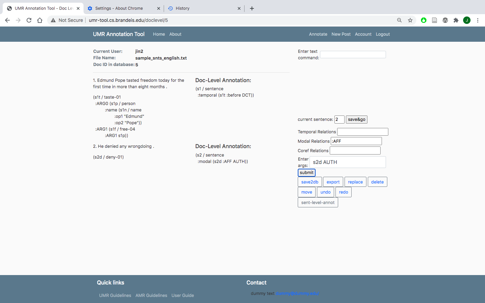During or after the process of annotating, you can click on export button to save a txt file on your local computer
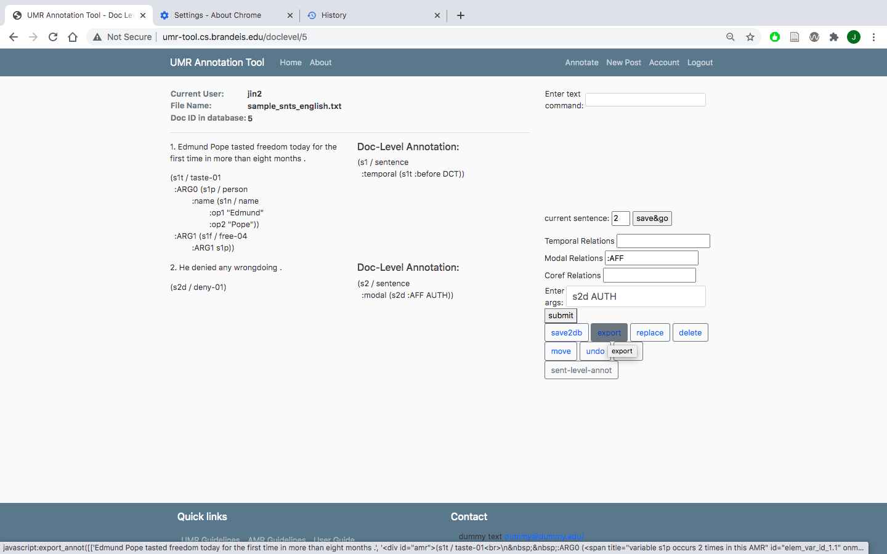 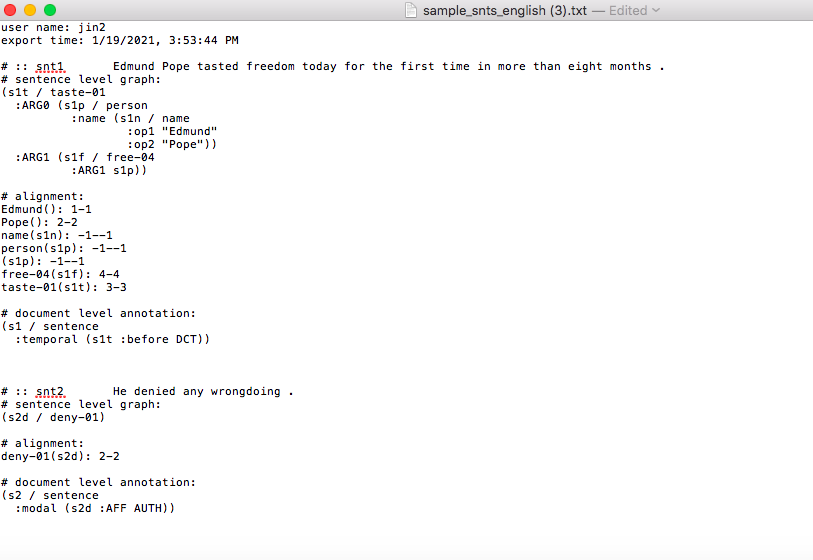 {% endblock content %}